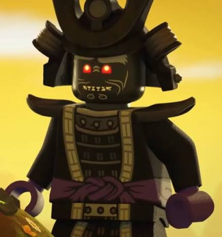
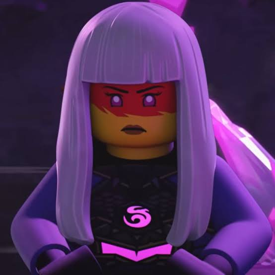

"Wherever there is light, there will always be shadow."
The Origins of Darkness
Since the creation of Ninjago, darkness has existed alongside the forces of creation. While the First Spinjitzu Master brought balance and harmony to the realm, a powerful force of evil was born to challenge that balance. Throughout history, darkness has returned in many forms, from ancient enemies seeking ultimate power to villains determined to reshape Ninjago in their own image. Every threat has left a mark on the realm, forcing the ninja to grow stronger and fight to protect the balance between light and shadow.
From the Overlord and the Oni to the many villains who have risen over the years, darkness has always tested the ninja's courage. Yet every battle proves that hope, unity, and determination can overcome even the greatest shadows.
The Greatest Threats

Overlord
The embodiment of darkness and one of Ninjago's greatest enemies.

Lord Garmadon
Once a hero, Garmadon was corrupted by darkness and became a powerful force of evil.

Harumi
The mysterious ruler who manipulated events to bring back the Overlord.

Morro
A former student of Wu who allowed his anger and ambition to control him.

Empress Beatrix
A power Hungry empress who hunted down dragons for energy

Lord Ras
A mysterious warrior who seeks to unleash chaos across the realms.